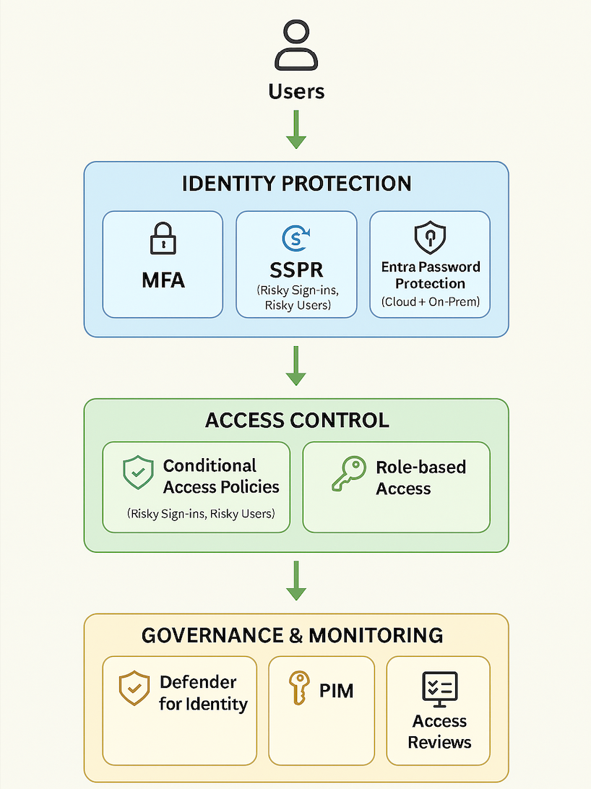

Challenge
Our Microsoft Secure Score was sitting at 40%, leaving the organization vulnerable to identity-based threats and lacking governance controls. We needed a strategic rollout of modern identity protection, access policies, and hybrid security tools to meet compliance and reduce risk.
Tools & Technologies
- Microsoft Entra ID (formerly Azure AD)
- Microsoft Defender for Identity
- Microsoft Entra Password Protection (Cloud + On-Prem)
- Privileged Identity Management (PIM)
- Access Reviews
- Conditional Access Policies
- Self-Service Password Reset (SSPR)
Implementation
- Enforced Multi-Factor Authentication (MFA) for all users
- Created Conditional Access policies for:
- Risky sign-ins
- Risky user behavior
- Enabled SSPR for secure password remediation
- Deployed Microsoft Defender for Identity across domain controllers
- Installed Entra Password Protection agents on-prem and configured banned password lists
- Activated PIM for just-in-time access to sensitive roles
- Scheduled Access Reviews for role hygiene and least privilege enforcement
Secure Score Architecture Diagram
Impact
- Raised Microsoft Secure Score from 40% to 87%
- Reduced exposure to identity-based threats
- Strengthened hybrid identity posture across Microsoft 365 and on-prem AD
- Improved audit readiness and governance transparency
Relevant Certification
This project aligns directly with the SC-300: Microsoft Identity and Access Administrator certification, demonstrating real-world application of its core objectives.